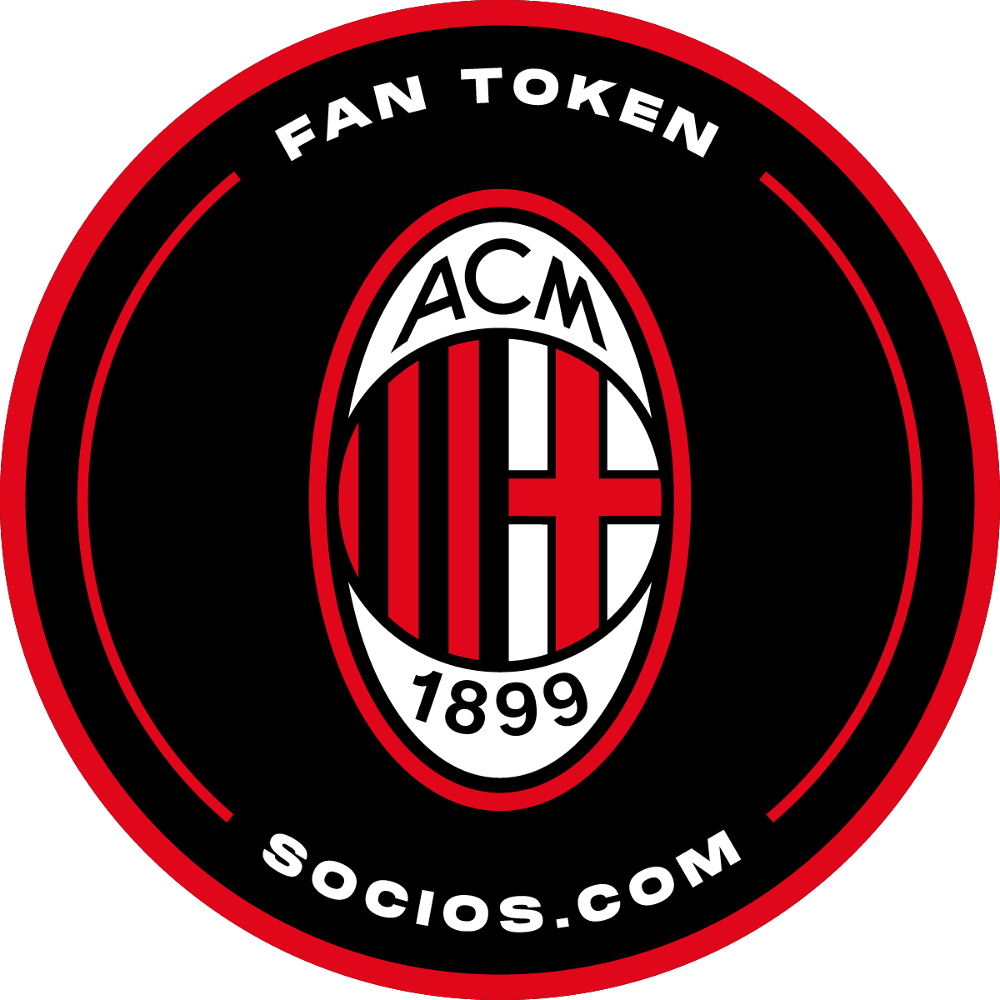
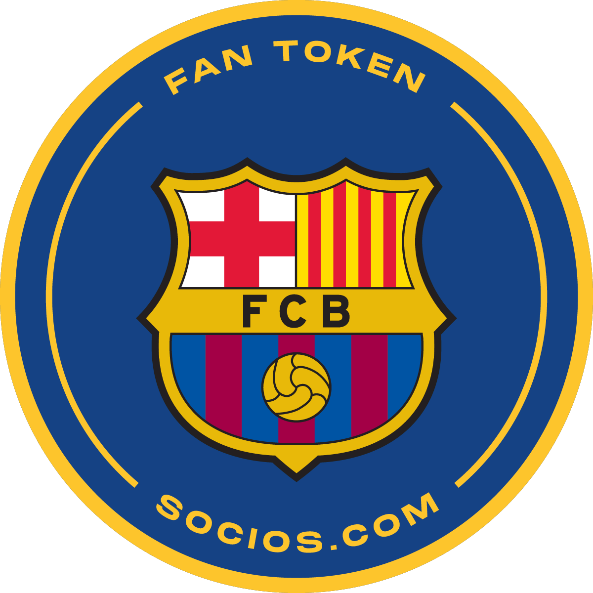
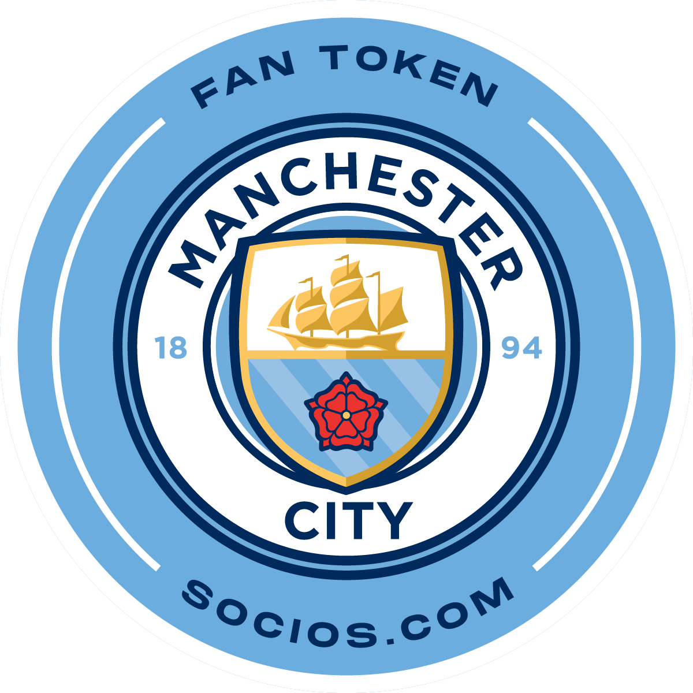
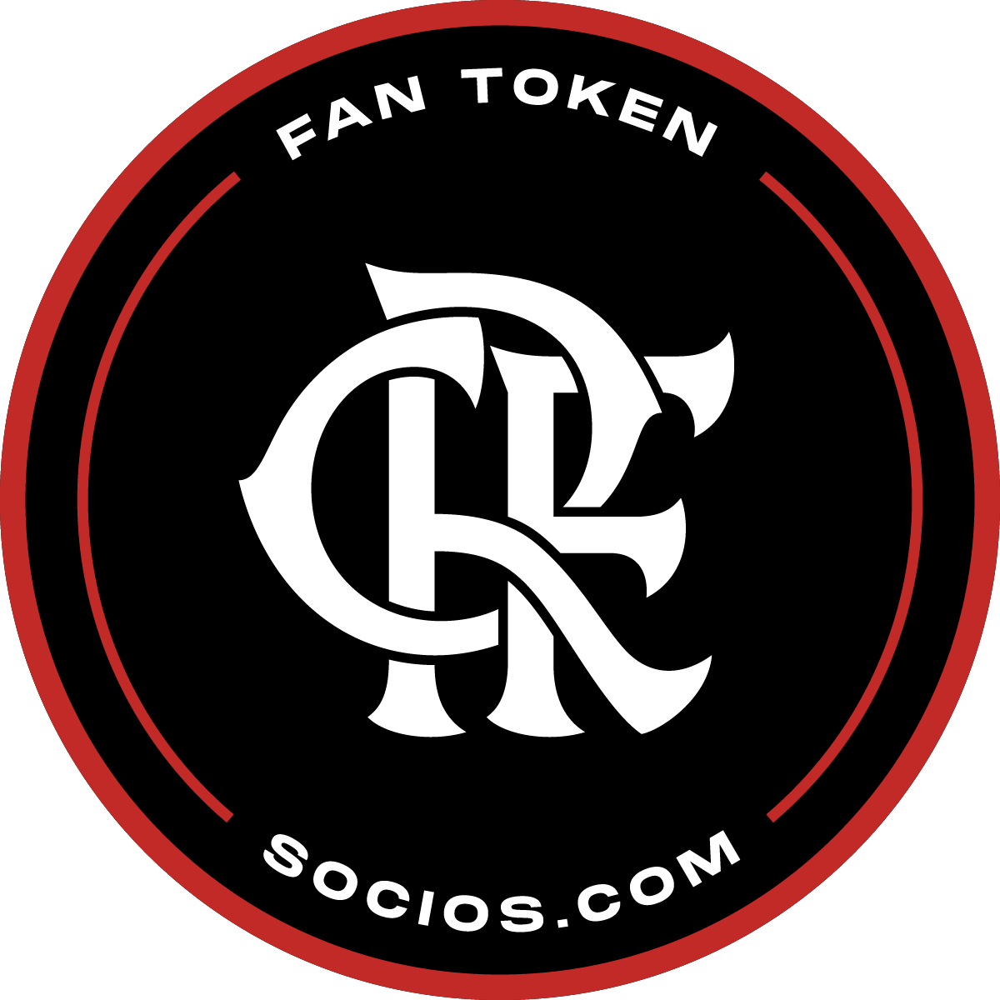
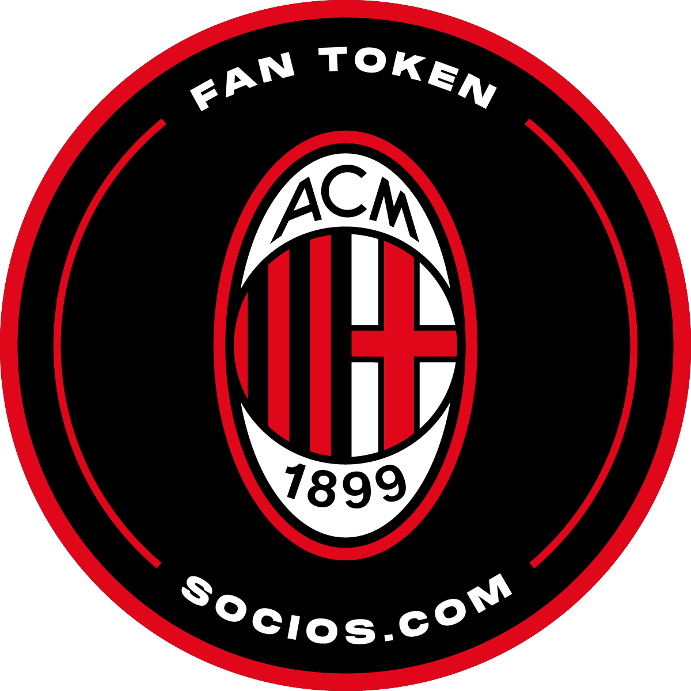
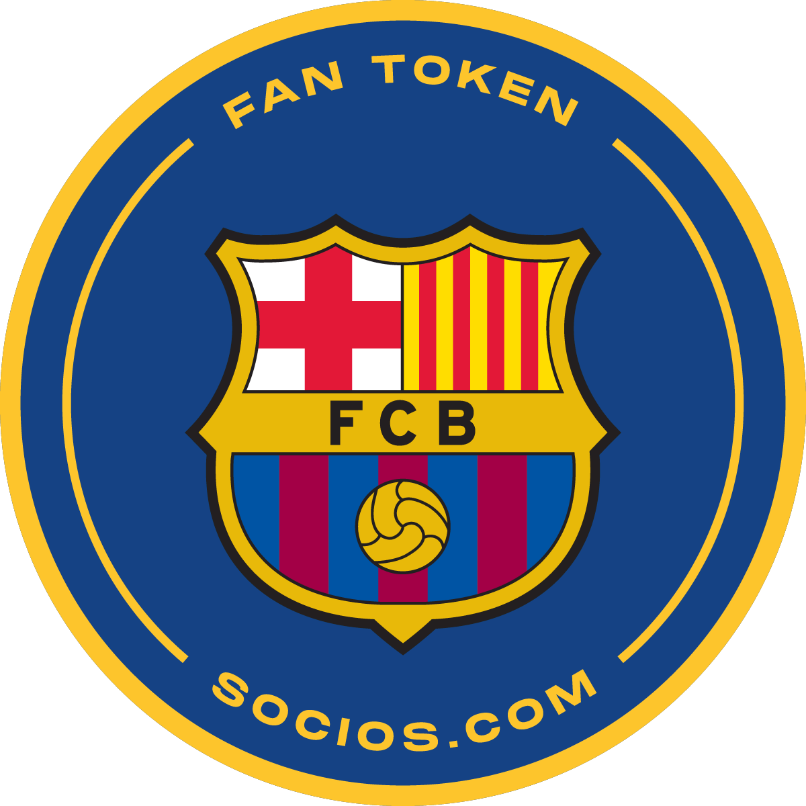
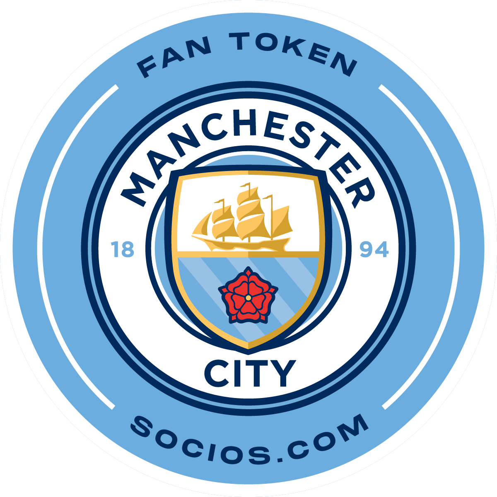
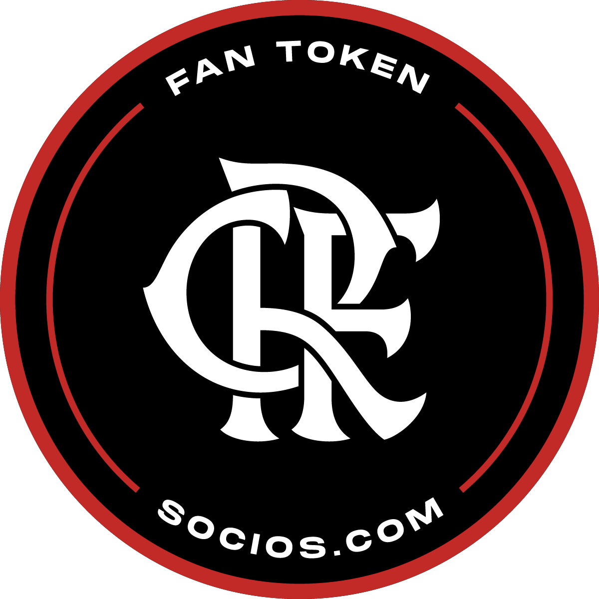

EVM compatible layer-1 protocol - the foundation upon which the entire Chiliz ecosystem, inclusive of Fan Tokens™, Socios.com, and SportFi, is built. It is the only L1 blockchain dedicated to sports, with the biggest sports partner network in blockchain - Fan Tokens™. Chiliz Chain welcomes innovative developers, brands and entrepreneurs to leverage our network and experience, and fully realize the potential of Web3 sports.

$CHZ is the native digital token for the Chiliz sports & entertainment ecosystem, including all the dApps that are building on top of it

Socios.com - one of the most innovative digital platforms in sports, that has been embraced by 70+ major sports teams, who have improved engagement with their global audiences and created new revenue streams. Fan Token™ holders have enjoyed exclusive rights, engagement opportunities and rewards on Socios.com since 2019. Now, they can look forward to more chances to reward their passion through the Socios.com Web3 Wallet.
 







Fan Tokens™ are official Digital Assets for the world’s best sport teams. They form the biggest Digital Asset class in sports. There are over 2M+ Fan Token™ wallets, with holders benefiting from exclusive rights, access and rewards on Socios.com. They are primed for exponential growth, ready to be integrated into SportFi dApps built on Chiliz Chain, and delivering direct access to new experiences from the Socios.com Web3 Wallet.